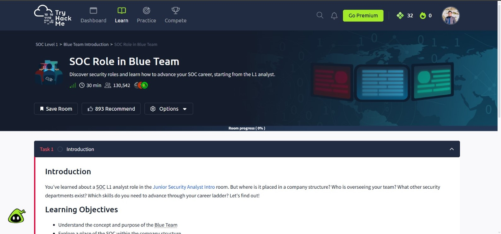
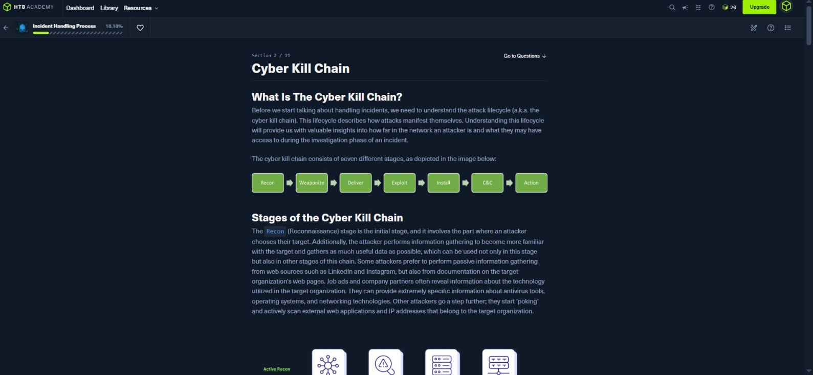

BSCS student at University of Malakand.
Building a research-driven Mini SOC for my Final Year Project.
I'm a BSCS (7th semester) student at the University of Malakand, focused on cybersecurity. My Final Year Project centers on designing and evaluating a lightweight alert correlation engine for a resource-constrained Mini SOC. I'm interested in SOC operations, threat detection, and open-source security tools.
A Bachelor's Final Year Project building a fully open-source Security Operations Center with a custom Python correlation engine. The system integrates Suricata, Wazuh, and Filebeat to detect, correlate, and prioritize internal network threats. Evaluated through a three-configuration comparison (network-only, host-only, correlated) across six attack scenarios and 180 controlled experiments. Built for small organizations that cannot afford commercial SIEM solutions.
Can a lightweight, rule-based correlation engine reduce duplicate SOC alerts while preserving detection coverage in a resource-constrained Mini SOC?

Kali Linux, Parrot OS, Metasploitable 3

Learning paths & fundamentals

Beginner machines

Exposure to offensive methods